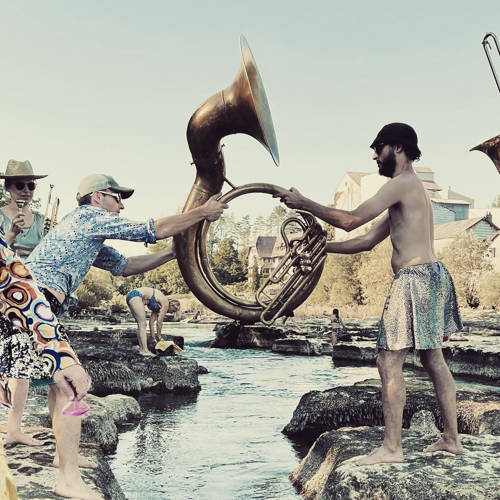

Les Krapos
ÉcouterFanfare amphibienne bondissante
Si la fanfare est née en 1995 sur les bancs de la faculté de médecine de Lyon, les fanfarons des Krapos viennent aujourd'hui d'horizons différents.
Cette joyeuse bande de batraciens se balade donc toujours accompagnée de trompettes, saxophones, trombones, euphoniums, soubas et batterie, pour faire travailler en rythme et en musique les cuisses musclées et dessinées de son croâssant fan club!
Énergie déblatérante, joyeuseté envahissante, rires déplacés et souffle vigoureux se mêlent tant et si bien que, comme on dit, hein, ça expédie du pesant!
Chez vous ?
Vous souhaitez booster l'ambiance de votre événement ou de votre établissement avec la musique énergisante des Krapos? Dites-nous tout!
Demande de devis
![Liste des artistes du répertoire : Adhesive Wombat, Billie Eilish, Biffy, Knife Party, Jamiroquai, Jain, Daft Punk, Justice, Overwerk, Dalida, Foals, C2C, Ghost in the shell, Erik Satie, Rocky, Bloc Party, Dimmu Borgir, Rammstein, Caravan Palace, The Cure, Claude François, Major Lazer, Jimmy Sommerville, Metallica, Muse, System of a Down, Rodrigo y Gabriela, Anakronic Electro Orkestra, Baby Metal, Supermen Lovers, La femme, Metronomy, AC/DC, Stromae, Carpenter Brut, Mark Ronson, Hypnotic Brass Ensemble, Red Hot Chili Peppers](assets/images/repertoire/nuage_de_mots.png)